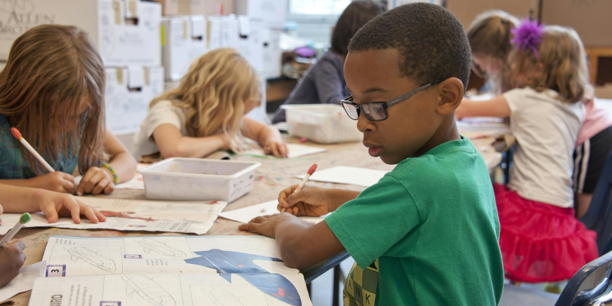

FSAberCampo
Início
A educação ainda não chega a todos, especialmente em regiões rurais e de difícil acesso.
Nosso projeto conecta voluntários e profissionais a estudantes que precisam de mais oportunidades.
Por meio da tecnologia, buscamos superar barreiras e democratizar o acesso ao conhecimento.
Junte-se a nós e faça parte dessa transformação.
Já possui uma conta?Entrar

Sobre
Somos uma iniciativa que acredita que a educação deve ser acessível a todos, independentemente de onde vivem.
Nosso objetivo é ampliar o acesso ao ensino de Matemática e Português, oferecendo conteúdos claros, atividades e apoio para facilitar o aprendizado.
Também buscamos aproximar voluntários de estudantes e incentivar a sociedade a participar da construção de uma educação mais justa e igualitária.

Métodos
Conheça nossa forma de ensino, baseada em conteúdos adaptados, atividades práticas e acompanhamento dos voluntários.
1. Aprenda no seu ritmo
Conteúdos adaptados ao nível e às dificuldades de cada aluno, seguindo uma alfabetização passo a passo e respeitando o ritmo de aprendizagem.

2. Aprenda com a prática
Utilizamos situações reais do cotidiano para ensinar Matemática e Português, tornando o aprendizado mais simples, útil e fácil de compreender.
3. Aprenda com apoio
Voluntários acompanham os estudantes, tirando dúvidas e incentivando o aprendizado por meio de desafios, pequenas conquistas e atividades interativas.

Relatos
Confira experiências e depoimentos de alunos e voluntários sobre a participação no projeto e o impacto na aprendizagem.
Aluna
“As aulas de Matemática me ajudaram a entender melhor os conteúdos e aprender de uma forma mais simples e divertida.”
 Lucas Henrique Oliveira
Lucas Henrique Oliveira
Aluno
“A plataforma facilitou meu acesso às atividades e pude aprender no meu ritmo, contando sempre com o apoio dos voluntários.”
Professora
“Participar do projeto tem sido uma experiência muito gratificante. A plataforma facilita o acompanhamento dos alunos e das atividades.”
Professor
“Com a plataforma, consigo organizar melhor minhas aulas e acompanhar o progresso dos estudantes, contribuindo para o aprendizado deles.”
Aulas
Acesse conteúdos e atividades de Português e Matemática preparados para apoiar o aprendizado dos estudantes.

Língua Portuguesa
Conteúdos e atividades para desenvolver a leitura, a escrita e a compreensão da língua portuguesa.
Matemática
Conteúdos e atividades para desenvolver o raciocínio lógico e facilitar a compreensão da matemática.
Contatos
Entre em contato conosco!
Youtube
1,1 mi de inscritos
90,6 mil de seguidores
90,6 mil de seguidores
(11) 9999-99999
fsaber.campo@contato.com